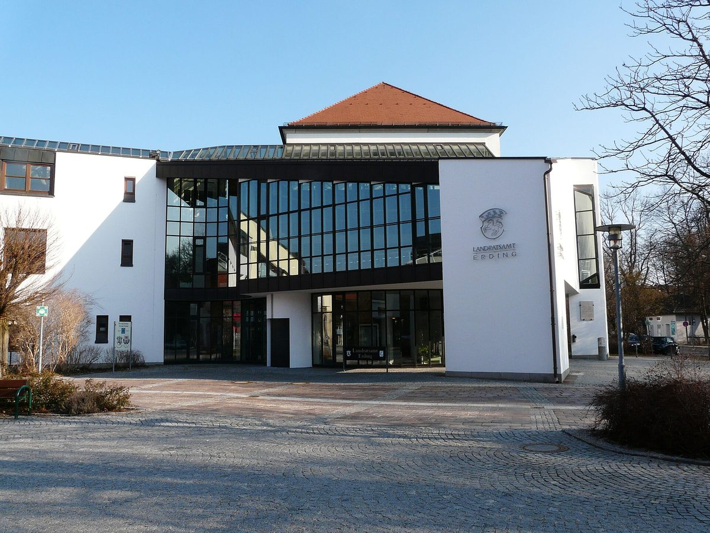

독일 에르딩 군·22개 지자체 에너지회사, 풍력 부지 협상 재개…시민에너지공동체 BEG 이젠탈과 지역 나눠 맡기로

2014년 10H 규정으로 멈췄던 '에너지비전 에르딩', 에너지알리안츠 바이에른과 풍력·태양광 약 40MW 목표…군은 히르샤우 태양광단지에 출자, 매립지 태양광은 망 연결 문제로 중단
독일 바이에른주 에르딩 군과 22개 지자체, 지역 에너지회사들이 함께 세운 유한회사 '에너지비전 에르딩(EVE)'이 풍력 우선지역에서 부지 확보 계약 협상을 벌이며 멈춰 있던 재생에너지 사업을 다시 밀고 있다. 세 명의 공동대표 가운데 한 명인 마티아스 후버 군청 부서장은 군의회 건설·에너지위원회에서 생태민주당(ÖDP) 질의에 답하며 타우프키르헨 시와 입지 검토 계약을 맺었다고 밝혔다. 이젠 국유림의 풍력은 몇 달 전 입지 2곳의 사업권을 따낸 시민에너지공동체 BEG 이젠탈이 맡고, EVE와 BEG는 사업 개발을 서로 조율하는 협약에 서명했으며, 후버 대표는 "누가 어디를 맡아 이끌지 군을 대략 나눠 놓았다"며 지금까지 잘 돌아가고 있다고 말했다. 태양광에서는 군이 에이팅의 히르샤우 태양광단지에 합자 출자로 참여했고 이 단지는 2025년 10월 가동 뒤 7GWh를 생산했으며, EVE는 에너지알리안츠 바이에른(EAB)과 협력 계약을 맺고 앞으로 몇 년 안에 풍력·태양광 약 40MW를 실현한다는 목표를 세웠다. 다만 이젠의 군 쓰레기 매립지 태양광은 망 운영사가 바뀌면서 가장 가까운 연결점이 8km 떨어지게 돼 계획이 멈췄고, EVE는 BEG 이젠탈과 연결 비용을 함께 부담하는 방안을 논의하고 있다. 2013년 풍력 보급을 위해 세워진 EVE는 이듬해 바이에른의 '10H 규정'(발전기 높이의 10배 거리 규제)으로 풍력 계획이 막힌 뒤 군 건물 지붕 태양광 정도에 머물렀고, 같은 해 4개 지자체가 탈퇴했다.
시민에너지 관점
군과 지자체가 세운 회사와 주민의 에너지공동체가 서로 다투지 않고 지역을 나눠 맡고, 망 연결 비용까지 함께 지려는 것은 공공과 시민이 손잡을 때 사업이 다시 움직일 수 있음을 보여 준다. 공공이 직접 하면 될 일에 시민 조직까지 끼면 오히려 복잡해진다는 지적이 나올 수 있지만, 10H 규정 뒤 10년 넘게 풍력이 멈췄던 이 군에서 국유림 입지를 따낸 것은 시민에너지공동체였다. 독일은 재생에너지법(EEG)에서 풍력 사업자가 생산 전력 kWh당 최대 0.2센트를 입지 지자체에 낼 수 있게 해, 지자체가 발전소에서 직접 수익을 얻는 길도 열어 두었다. 국내 지자체도 공공 출자 회사와 주민 협동조합이 입지와 역할을 나누는 협약을 먼저 맺고, 망 연결 같은 공동 비용은 함께 지는 구조부터 만들어야 한다.
출처: 쥐트도이체 차이퉁(Süddeutsche Zeitung) 2026-10-26 Thomas Daller 원문 보기
ドイツ・エルディング郡と22自治体のエネルギー会社、風力用地の交渉を再開…市民エネルギー共同体BEGイーゼンタールと地域を分担
2014年の10H規制で止まった「エネルギービジョン・エルディング」、エネルギーアリアンツ・バイエルンと風力・太陽光約40MWを目標…郡はヒルシャウ太陽光発電所に出資、埋立地の太陽光は系統接続の問題で中断
ドイツ・バイエルン州のエルディング郡と22の自治体、地域のエネルギー会社が共同で設立した有限会社「エネルギービジョン・エルディング（EVE）」は、風力優先地域で用地確保契約の交渉を進め、止まっていた再生可能エネルギー事業を再び動かしている。3人の共同代表の1人で郡庁の部長を務めるマティアス・フーバー氏は、郡議会の建設・エネルギー委員会でエコロジー民主党（ÖDP）の質問に答え、タウフキルヒェン町と立地調査契約を結んだと明らかにした。イーゼンの州有林での風力は、数カ月前に2カ所の事業権を獲得した市民エネルギー共同体BEGイーゼンタールが担い、EVEとBEGは事業開発を互いに調整する協定に署名しており、フーバー氏は「誰がどこで主導するか、郡をおおまかに分けた」と述べ、これまでうまく機能していると語った。太陽光では、郡がアイティングのヒルシャウ太陽光発電所に合資の出資で参加し、同発電所は2025年10月の稼働以来7GWhを発電した。EVEはエネルギーアリアンツ・バイエルン（EAB）と協力契約を結び、今後数年で風力・太陽光約40MWを実現する目標を掲げた。ただしイーゼンの郡ごみ埋立地での太陽光は、系統運用者が替わって最寄りの接続点が8km離れたため計画が止まっており、EVEはBEGイーゼンタールと接続費用を共同で負担する案を協議している。2013年に風力普及のために設立されたEVEは、翌年バイエルン州の「10H規制」（発電機の高さの10倍の離隔距離規制）で風力計画が阻まれた後、郡の建物の屋根での太陽光程度にとどまり、同じ年に4自治体が脱退した。
市民エネルギーの視点
郡と自治体がつくった会社と住民のエネルギー共同体が争わずに地域を分担し、系統接続の費用まで共に負担しようとしていることは、公共と市民が手を組めば事業が再び動き出しうることを示している。公共が直接やればよいことに市民組織まで加わればかえって複雑になるという指摘もありうるが、10H規制以降10年以上風力が止まっていたこの郡で州有林の立地を勝ち取ったのは市民エネルギー共同体だった。ドイツは再生可能エネルギー法（EEG）で、風力事業者が発電量1kWhあたり最大0.2セントを立地自治体に支払えるようにし、自治体が発電所から直接収益を得る道も開いている。韓国の自治体も、公共出資会社と住民協同組合が立地と役割を分け合う協定をまず結び、系統接続のような共通の費用は共に負担する仕組みから整えるべきだ。
出典: 南ドイツ新聞（Süddeutsche Zeitung） 2026-10-26 トーマス・ダラー（Thomas Daller） 原文を読む
德国埃尔丁县与22个市镇的能源公司重启风电用地谈判，与市民能源共同体BEG Isental分区负责
因2014年10H规定而停滞的"埃尔丁能源愿景"与巴伐利亚能源联盟定下风电和光伏约40MW目标；县政府入股希尔绍光伏电站，填埋场光伏因并网问题暂停
由德国巴伐利亚州埃尔丁县、22个市镇和地方能源企业共同成立的有限责任公司"埃尔丁能源愿景"（EVE）正在风电优先区推进用地保障合同谈判，重新推动此前停滞的可再生能源项目。三名联合负责人之一、县政府部门负责人马蒂亚斯·胡贝尔（Matthias Huber）在县议会建设与能源委员会答复生态民主党（ÖDP）质询时表示，已与陶夫基兴镇签订选址考察合同。伊森州有林的风电由几个月前取得两处选址开发权的市民能源共同体BEG Isental负责，EVE与BEG已签署相互协调项目开发的协议；胡贝尔说："我们已经把全县大致划分好，谁在哪里牵头。"他表示到目前为止运转良好。在光伏方面，县政府以有限合伙出资方式参与了艾廷的希尔绍光伏电站，该电站自2025年10月投运以来已发电7GWh；EVE还与巴伐利亚能源联盟（EAB）签订合作合同，目标是在未来几年内建成约40MW的风电和光伏项目。不过，位于伊森的县垃圾填埋场的光伏项目因电网运营方变更、最近的并网点远在8公里外而暂停，EVE正与BEG Isental商讨共同分担并网费用的方案。EVE于2013年为推广风电而成立，次年因巴伐利亚"10H规定"（风机与住宅间距须为机高10倍）而使风电计划受阻，此后只做了县属建筑屋顶光伏等项目，同年有4个市镇退出。
市民能源视角
县和市镇设立的公司与居民的能源共同体不相争、分区负责，甚至打算共同承担并网费用，说明公共部门与市民携手时，项目可以重新运转起来。有人可能会说，公共部门直接做就行，再加上市民组织反而更复杂；但在10H规定后风电停滞十多年的这个县，拿下州有林选址的正是市民能源共同体。德国在《可再生能源法》（EEG）中允许风电开发商按每千瓦时最多0.2欧分向所在市镇付款，也为地方政府直接从电站获得收益打开了通道。韩国地方政府也应先让公共出资公司与居民合作社签订划分选址和职责的协议，并从共同承担并网等共同费用的结构做起。
来源: 《南德意志报》（Süddeutsche Zeitung） 2026-10-26 Thomas Daller 查看原文
Energy company of Germany's Erding district and 22 municipalities resumes wind site talks, dividing the district with citizen energy community BEG Isental
Energievision Erding, stalled by Bavaria's 10H rule in 2014, targets about 40 MW of wind and solar with Energieallianz Bayern; the district has invested in the Hirschau solar park, while landfill solar is on hold over grid connection
Energievision Erding (EVE), a limited company jointly set up by the district of Erding in Bavaria, 22 municipalities and regional energy suppliers, is negotiating land-lease agreements in priority wind zones as it pushes its stalled renewable energy projects forward again. Matthias Huber, a department head at the district office and one of EVE's three managing directors, told the district council's building and energy committee, in reply to a question from the Ecological Democratic Party (ÖDP), that a site assessment agreement had been signed with the municipality of Taufkirchen. Wind power in the Isen state forest will be developed by the citizen energy community BEG Isental, which won the rights to two sites there a few months ago, and EVE and BEG have signed an agreement to coordinate their project development; "We have roughly divided up the district as to who takes the lead where," Huber said, adding that it had worked well so far. On solar, the district has taken a limited-partnership stake in the Hirschau solar park in Eitting, which has generated 7 GWh since starting up in October 2025, and EVE has signed a cooperation agreement with Energieallianz Bayern (EAB) with the aim of realising about 40 MW of wind and solar projects in the coming years. However, plans for solar on the district landfill in Isen are on hold because a change of grid operator has left the nearest connection point 8 km away, and EVE is discussing with BEG Isental how to share the connection costs. Founded in 2013 to promote wind power, EVE saw its wind plans blocked the following year by Bavaria's "10H rule," which requires turbines to stand ten times their height from homes, after which it did little more than solar on district-owned buildings, and four municipalities left it that same year.
Citizen Energy View
A company set up by the district and its municipalities and a residents' energy community dividing up the area instead of competing, and even planning to share grid connection costs, shows that projects can get moving again when the public sector and citizens join hands. Some may argue that adding a citizen organisation only complicates what the public sector could do itself, but in a district where wind power stood still for more than ten years after the 10H rule, it was the citizen energy community that won the state forest sites. Germany's Renewable Energy Sources Act (EEG) lets wind operators pay host municipalities up to 0.2 euro cents per kWh generated, opening a way for local governments to earn directly from power plants. Korean local governments should likewise start with agreements in which publicly funded companies and residents' cooperatives divide sites and roles, and with structures for sharing common costs such as grid connection.
Source: Süddeutsche Zeitung 2026-10-26 Thomas Daller Read the original